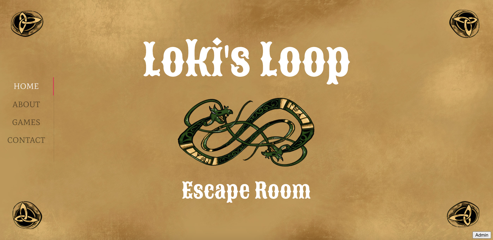

I am currently a Student Assistant for the Center for an Informed Public, collaborating with Professor Chris Coward and Professor Jin Ha Lee to create a virtual escape room that teaches people about misinformation. You can find a link to the virtual escape room here.
My current focus is designing a new website for the Escape Room Project! The website will be a central hub were people can come to find the escape room games, resources for players and game hosts, a blog, and more information about the history of the game and how it get involved. So far, I have created some first-draft mockups for the game (as seen below) and am working to finalize and implement them.
This website is different from the previous one for 2 reasons:
When creating the page layouts and mockups, I went though a lot of different iterations to help the team decide what pages they wanted to include and how they would allow people to traverse the site. Even though we had an idea of what we wanted at the beginning of the project, the mockups that we are working with today are very different. However, instead of getting frusturated with these constant changes, I found them to be very interesting and helpful. I am excited to be making even more changes as the project continues.
This past summer, I worked to create a comprehensive Resource Kit that participants would engage with after they complete the escape room. The goal of the Resource Kit is to encourage discussion about the escape room and reinforce important learnings about misinformation. This includes giving participants resources to learn more about the topic and recommendations about how to combat misinformation in their everyday lives.
Previously, I worked with a group of students to enhance the player experience for the virtual escape room. I conducted A/B testing for new game designs, which ensured that the team was creating puzzles that were challenging, memorable, and easy-to-understand.